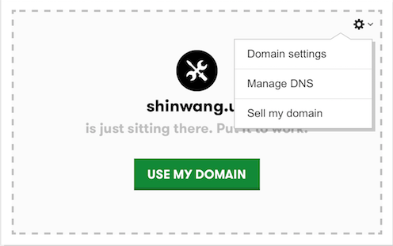
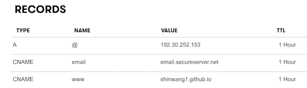

a bias towards action
I've always wanted to build my own website. The problem is, there was not enough bias towards action. These days, it's incredibly easy to have your own blog, landing page, portfolio online. There's Strikingly, AboutMe, and a number of companies that'll let you build a basic site for free. Why then, did I not start one? I kept thinking... I didn't think I have anything to say. I didn't think I had "good enough" content to blog. I often thought: "what the point of posting an unfinished project?" Well, there's already Facebook. The truth is, all these voices are excuses I gave myself to do something else. I was afraid that people would judge harshly. The irony of this thinking had some truth to it, but it's mostly false. There's a lot out there online... so much that no one is going to sit there and read everything that you post. There's so much content out there that you'd be surprised if you even go back to read what you post. So now what? I started building a web blog as a way to understand development, to learn about programming, and to open doors to get into the technology field. It would be for myself.
I could probably write a whole bunch here since Phase 0 taught me a lot. If I were to summarize the in-between periods, I would tell people to start simple and keep things modular. The learning process takes time. Build one thing at a time starting out with HTML5 and CSS3. Play with different HTML tags and know how they are modified with CSS. The thing is, after you build your first project, you'll probably be better at the next one. What I know now is that I should have made a process to keep all of my content in one place so that if I were to change my website using a template, I can easily inject my content. What I want to stress is that it's okay to experiement. It's not wasted time if you learned something afterwards, and you only get that by experimenting and making mistakes.
At the end of these 9 weeks, here's my post to demostrate my googling skills. It's on how to link your github pages account to your purchased domain.
Last step, link my GitHub Pages with my domain from GoDaddy. Thanks to Andrew's blog, the steps were pretty easy. he breaks it down to 6 steps:
- Assuming you have your Github Pages that look like example.github.io. Copy this somewhere because you'll use it later.
- Go to GitHub and commit a file called CNAME in your github.io directory. Inside this CNAME file, you'll need to put the domain name that you've purchased. For example, here's mine: shinwang.us
- Notice that you have a bunch of default RECORDS inside DNS Management console of your GoDaddy account. You will create your own record here.
- Add an "A(Host)" record under other records. A(Host) record is considered the "Type". You can select this from the dropdown. Under the "Name" field, put an "@" sign. Under the "Value" field, put "192.30.252.153". You can verify that this IP address is GitHub.io by typing it in your browser. Click "Add Record".
- Add a "CNAME" record with "www" in the "Name" field. In the "Value" field, you'll want to put your GH Pages. For me, I'm putting shinwang1.github.io. Don't forget to click "Add Record".
- You probably have a default A(Host) record in GoDaddy. It most likely points back to GoDadddy. You can delete that record once you have the new A(Host record for Github.Wait for changes to propogate.

